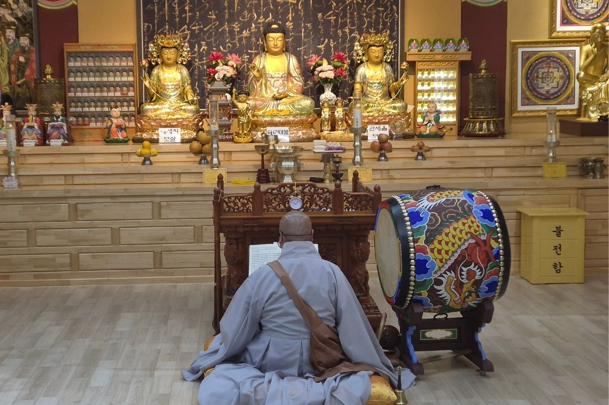
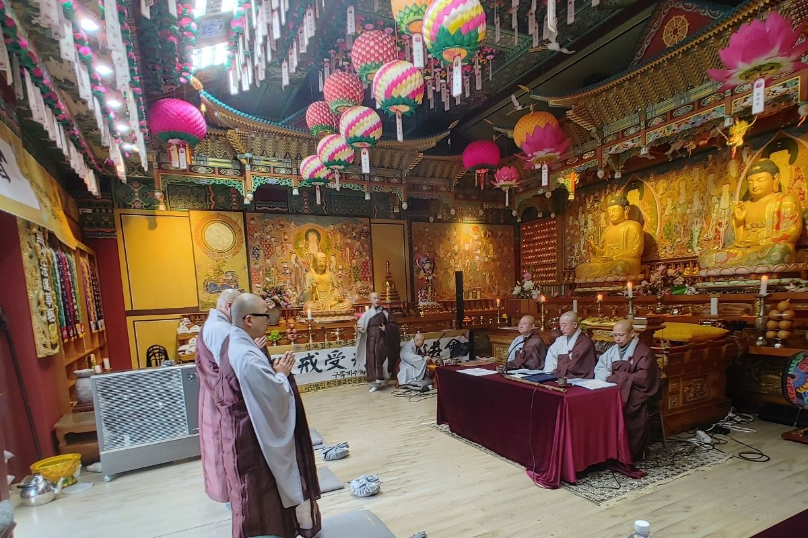
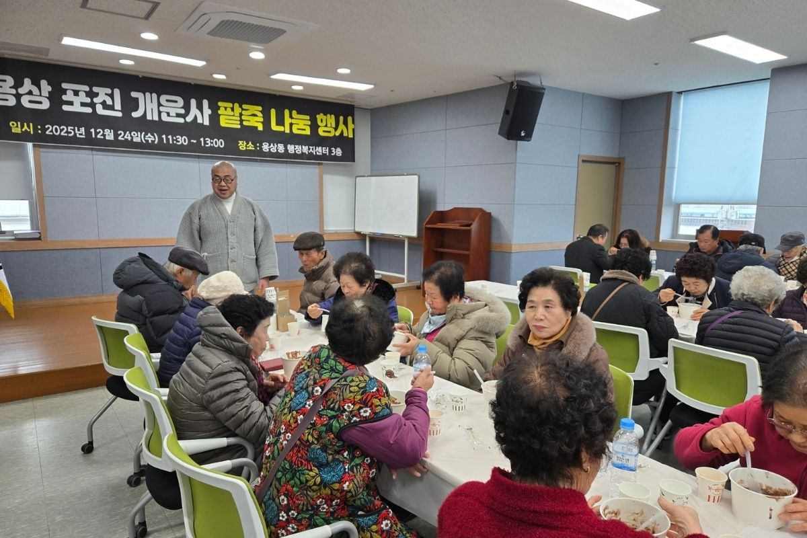
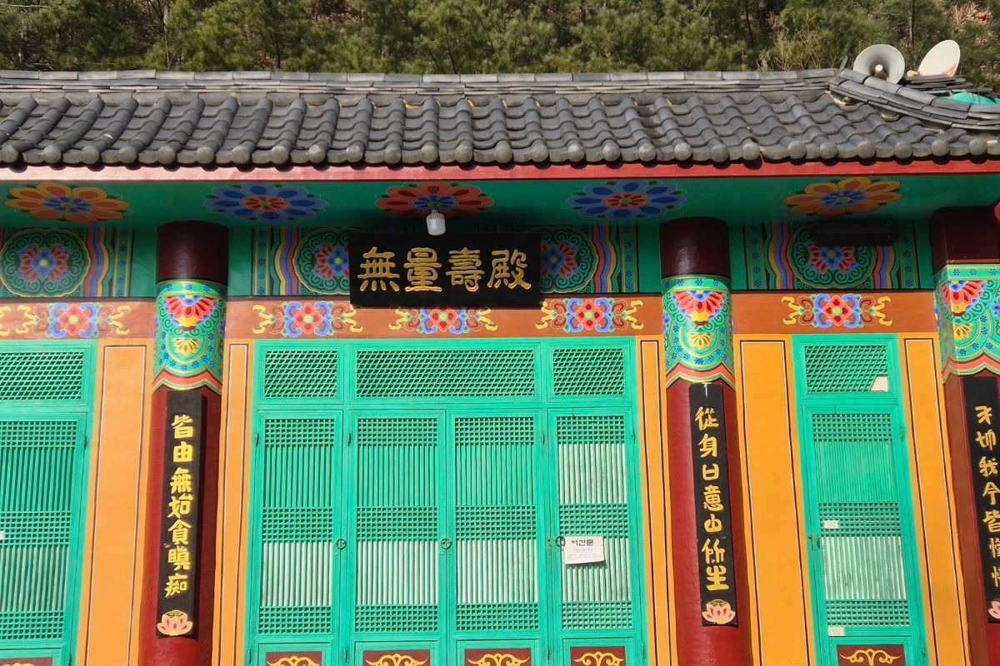
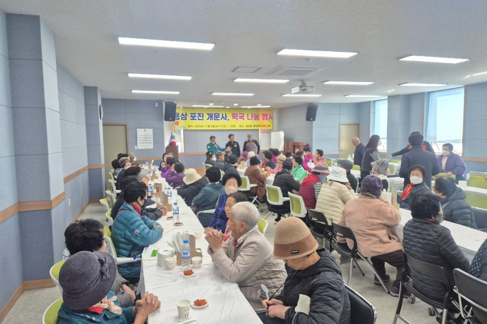

개운사 행사사진
개운사의 법회, 기도, 사찰 행사, 불교문화 활동 사진을 모아 소개합니다.

정기 법회
개운사 정기 법회와 신도님들의 신행 활동 모습을 소개합니다.

기도 행사
초하루기도, 특별기도, 가족 평안 기도 등 주요 기도 행사 사진입니다.

불교문화 행사
사찰 예절, 불교문화 체험, 지역사회와 함께하는 문화 활동입니다.

나눔 활동
공양, 봉사, 지역사회 나눔 활동을 함께 실천하는 모습입니다.

사찰 풍경
개운사의 전경, 법당, 사찰의 계절별 풍경을 담았습니다.

사찰 행사
개운사에서 진행되는 주요 행사와 신도님들의 참여 모습을 소개합니다.